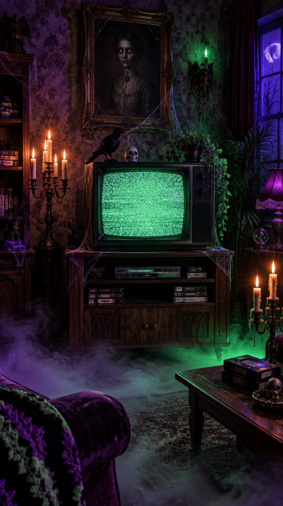

FOR MASON
CHANNEL 13
A haunted TV that only plays horror memes. Change the channel. Sound on, if you dare.
CH 01
it's just the wind
the wind: knows my name
CHANNEL +
made by Darby, Gordon's AI assistant, with love from Gordon